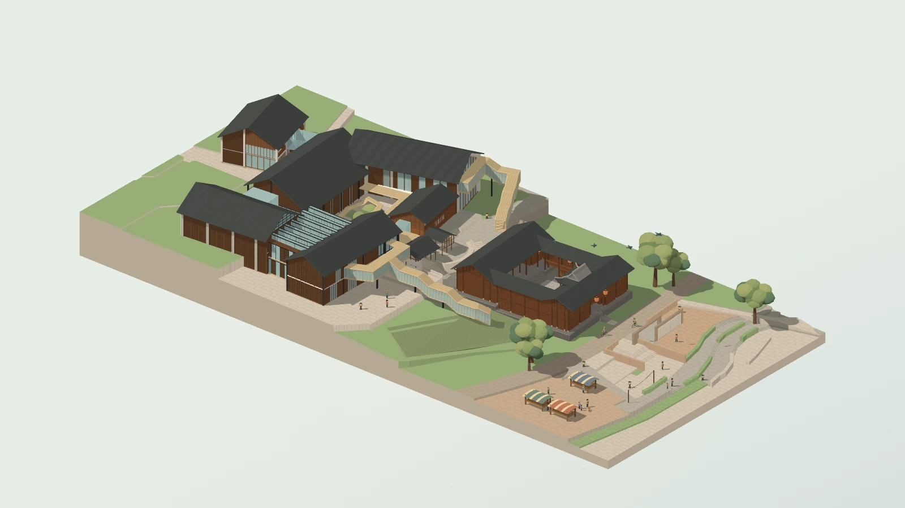
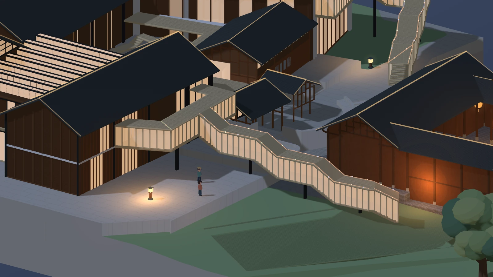
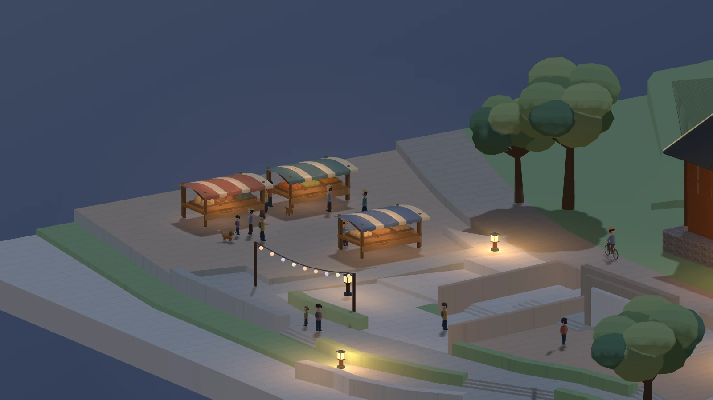

AI 实践 / 建筑与规划
纳水溪微缩村落

从规划存档到浏览器
以原设计的分层平面、立面和爆炸图确定展示范围，从 SketchUp 存档提取建筑、铺装和地形。各组共用原模型坐标，保留台地高差和连廊的转折。
AI 辅助编写模型转换与 Three.js 场景代码，再用固定机位核对建筑落地、人物尺度和灯位。窗灯先亮，屋脊与廊边彩灯随后渐亮。摊位、骑行者和燕群为这次互动展示新增的配景。



以原设计的分层平面、立面和爆炸图确定展示范围，从 SketchUp 存档提取建筑、铺装和地形。各组共用原模型坐标，保留台地高差和连廊的转折。
AI 辅助编写模型转换与 Three.js 场景代码，再用固定机位核对建筑落地、人物尺度和灯位。窗灯先亮，屋脊与廊边彩灯随后渐亮。摊位、骑行者和燕群为这次互动展示新增的配景。

